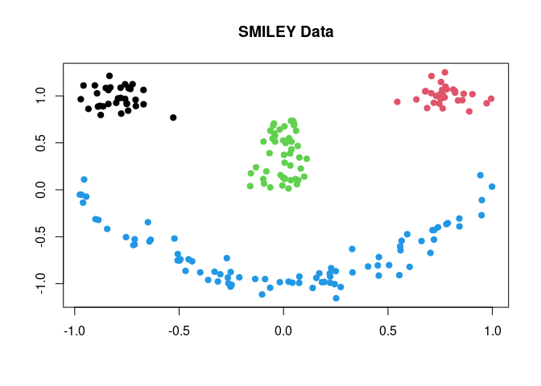
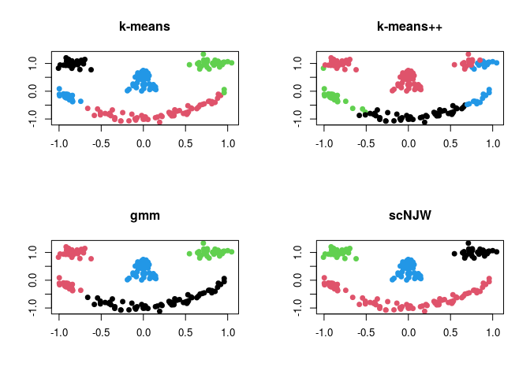

T4cluster is an R package designed as a computational toolkit with comprehensive coverage in relevant topics around the study of cluster analysis. It contains several classes of algorithms for
- Clustering with Vector-Valued Data
- Clustering with Functional Data
- Subspace Clustering
- Measures : Compare Two Clusterings
- Learning with Multiple Clusterings
and other utility functions for further use. If you request additional functionalities or have suggestions, please contact maintainer.
Installation
You can install the released version of T4cluster from CRAN with:
install.packages("T4cluster")And the development version from GitHub with:
# install.packages("devtools")
devtools::install_github("kyoustat/T4cluster")Minimal Example : Clustering SMILEY Data
T4cluster offers a variety of clustering algorithms in common interface. In this example, we show a basic pipeline with smiley dataset, which can be generated as follows;
# load the library
library(T4cluster)
# generate the data
smiley = T4cluster::gensmiley(n=200)
data = smiley$data
label = smiley$label
# visualize
plot(data, pch=19, col=label, xlab="", ylab="", main="SMILEY Data")
where each component of the face is considered as one cluster - the data has 4 clusters. Here, we compare 4 different methods; (1) k-means (kmeans), (2) k-means++ (kmeanspp), (3) gaussian mixture model (gmm), and (4) spectral clustering with normalized cuts (scNJW).
# run algorithms
run1 = T4cluster::kmeans(data, k=4)
run2 = T4cluster::kmeanspp(data, k=4)
run3 = T4cluster::gmm(data, k=4)
run4 = T4cluster::scNJW(data, k=4, sigma = 0.1)
# visualize
par(mfrow=c(2,2))
plot(data, pch=19, xlab="", ylab="", col=run1$cluster, main="k-means")
plot(data, pch=19, xlab="", ylab="", col=run2$cluster, main="k-means++")
plot(data, pch=19, xlab="", ylab="", col=run3$cluster, main="gmm")
plot(data, pch=19, xlab="", ylab="", col=run4$cluster, main="scNJW")